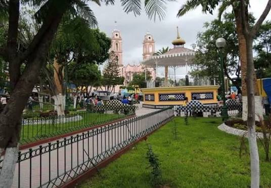

Este pagina fue creado con el propósito de que conozcas algunos de los lugares mas importantes de Tlacotepec de Benito Juarez, como parques, iglesias, monumentos y otros sitios representativos de este maravilloso municipio. A través de un menu interactivo, podras consultar informacion de cada lugar de una manera sencilla y practica.

Tlacotepec
Tlacotepec de Benito Juarez es un municipio del estado de Puebla, Mexico. Se distingue por sus tradiciones, su cultura y la hospitalidad de sus habitantes. Cuenta con lugares importantes como parques, iglesias y monumentos que forman parte de la historia e identidad de la comunidad.